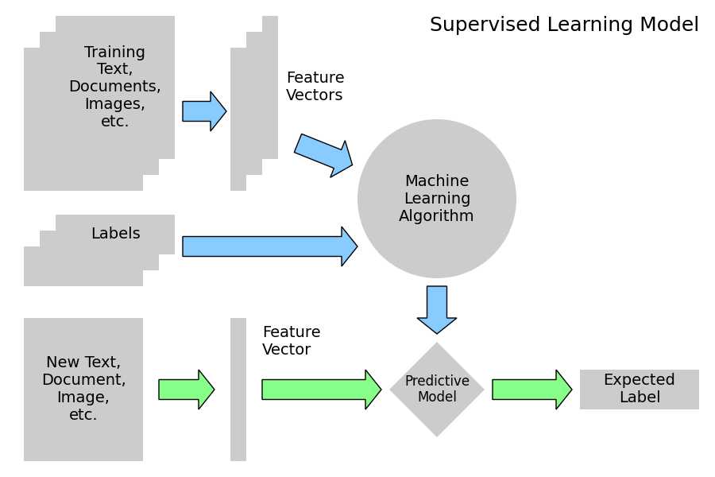
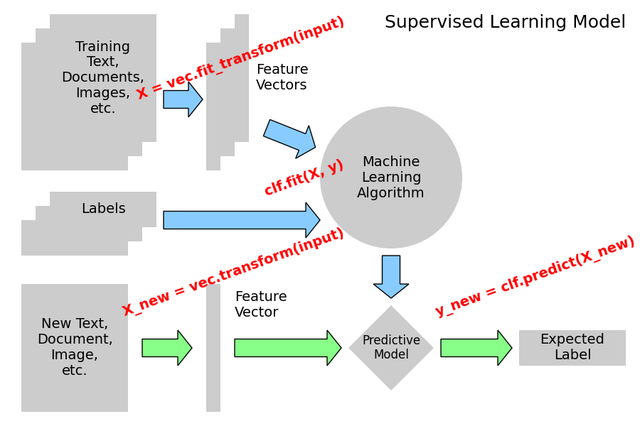
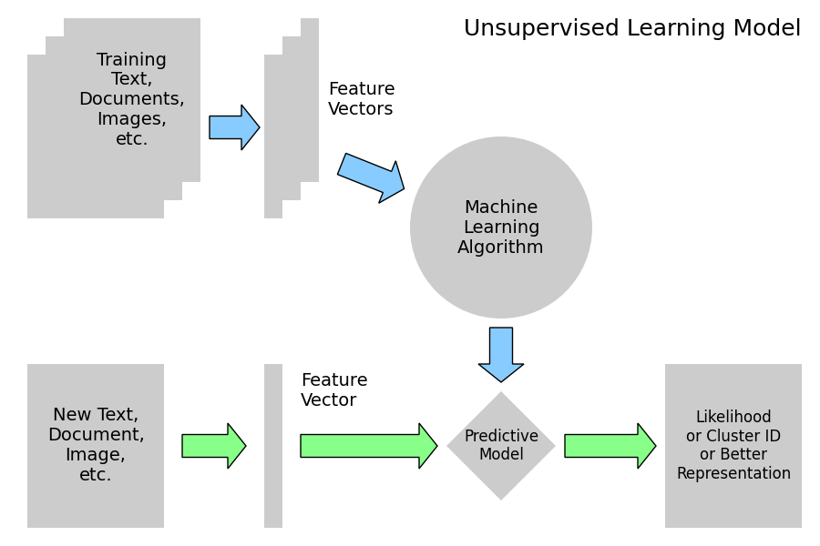

Note
Go to the end to download the full example code
3.4.8.17. Tutorial Diagrams¶
This script plots the flow-charts used in the scikit-learn tutorials.
- 
- 
- 
import numpy as np
import matplotlib.pyplot as plt
from matplotlib.patches import Circle, Rectangle, Polygon, Arrow, FancyArrow
def create_base(box_bg="#CCCCCC", arrow1="#88CCFF", arrow2="#88FF88", supervised=True):
fig = plt.figure(figsize=(9, 6), facecolor="w")
ax = plt.axes((0, 0, 1, 1), xticks=[], yticks=[], frameon=False)
ax.set_xlim(0, 9)
ax.set_ylim(0, 6)
patches = [
Rectangle((0.3, 3.6), 1.5, 1.8, zorder=1, fc=box_bg),
Rectangle((0.5, 3.8), 1.5, 1.8, zorder=2, fc=box_bg),
Rectangle((0.7, 4.0), 1.5, 1.8, zorder=3, fc=box_bg),
Rectangle((2.9, 3.6), 0.2, 1.8, fc=box_bg),
Rectangle((3.1, 3.8), 0.2, 1.8, fc=box_bg),
Rectangle((3.3, 4.0), 0.2, 1.8, fc=box_bg),
Rectangle((0.3, 0.2), 1.5, 1.8, fc=box_bg),
Rectangle((2.9, 0.2), 0.2, 1.8, fc=box_bg),
Circle((5.5, 3.5), 1.0, fc=box_bg),
Polygon([[5.5, 1.7], [6.1, 1.1], [5.5, 0.5], [4.9, 1.1]], fc=box_bg),
FancyArrow(
2.3, 4.6, 0.35, 0, fc=arrow1, width=0.25, head_width=0.5, head_length=0.2
),
FancyArrow(
3.75, 4.2, 0.5, -0.2, fc=arrow1, width=0.25, head_width=0.5, head_length=0.2
),
FancyArrow(
5.5, 2.4, 0, -0.4, fc=arrow1, width=0.25, head_width=0.5, head_length=0.2
),
FancyArrow(
2.0, 1.1, 0.5, 0, fc=arrow2, width=0.25, head_width=0.5, head_length=0.2
),
FancyArrow(
3.3, 1.1, 1.3, 0, fc=arrow2, width=0.25, head_width=0.5, head_length=0.2
),
FancyArrow(
6.2, 1.1, 0.8, 0, fc=arrow2, width=0.25, head_width=0.5, head_length=0.2
),
]
if supervised:
patches += [
Rectangle((0.3, 2.4), 1.5, 0.5, zorder=1, fc=box_bg),
Rectangle((0.5, 2.6), 1.5, 0.5, zorder=2, fc=box_bg),
Rectangle((0.7, 2.8), 1.5, 0.5, zorder=3, fc=box_bg),
FancyArrow(
2.3, 2.9, 2.0, 0, fc=arrow1, width=0.25, head_width=0.5, head_length=0.2
),
Rectangle((7.3, 0.85), 1.5, 0.5, fc=box_bg),
]
else:
patches += [Rectangle((7.3, 0.2), 1.5, 1.8, fc=box_bg)]
for p in patches:
ax.add_patch(p)
plt.text(
1.45,
4.9,
"Training\nText,\nDocuments,\nImages,\netc.",
ha="center",
va="center",
fontsize=14,
)
plt.text(3.6, 4.9, "Feature\nVectors", ha="left", va="center", fontsize=14)
plt.text(
5.5, 3.5, "Machine\nLearning\nAlgorithm", ha="center", va="center", fontsize=14
)
plt.text(
1.05,
1.1,
"New Text,\nDocument,\nImage,\netc.",
ha="center",
va="center",
fontsize=14,
)
plt.text(3.3, 1.7, "Feature\nVector", ha="left", va="center", fontsize=14)
plt.text(5.5, 1.1, "Predictive\nModel", ha="center", va="center", fontsize=12)
if supervised:
plt.text(1.45, 3.05, "Labels", ha="center", va="center", fontsize=14)
plt.text(8.05, 1.1, "Expected\nLabel", ha="center", va="center", fontsize=14)
plt.text(
8.8, 5.8, "Supervised Learning Model", ha="right", va="top", fontsize=18
)
else:
plt.text(
8.05,
1.1,
"Likelihood\nor Cluster ID\nor Better\nRepresentation",
ha="center",
va="center",
fontsize=12,
)
plt.text(
8.8, 5.8, "Unsupervised Learning Model", ha="right", va="top", fontsize=18
)
def plot_supervised_chart(annotate=False):
create_base(supervised=True)
if annotate:
fontdict = {"color": "r", "weight": "bold", "size": 14}
plt.text(
1.9,
4.55,
"X = vec.fit_transform(input)",
fontdict=fontdict,
rotation=20,
ha="left",
va="bottom",
)
plt.text(
3.7,
3.2,
"clf.fit(X, y)",
fontdict=fontdict,
rotation=20,
ha="left",
va="bottom",
)
plt.text(
1.7,
1.5,
"X_new = vec.transform(input)",
fontdict=fontdict,
rotation=20,
ha="left",
va="bottom",
)
plt.text(
6.1,
1.5,
"y_new = clf.predict(X_new)",
fontdict=fontdict,
rotation=20,
ha="left",
va="bottom",
)
def plot_unsupervised_chart():
create_base(supervised=False)
if __name__ == "__main__":
plot_supervised_chart(False)
plot_supervised_chart(True)
plot_unsupervised_chart()
plt.show()
Total running time of the script: (0 minutes 0.192 seconds)